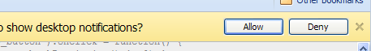

The Notifications API allows you to display notifications to the user for given events, both passively (new emails, tweets or calendar events) and on user interactions regardless of which tab has focus. There is draft spec but it is not currently in any standard.
You can follow these simple steps to implement notifications in just a few minutes:
We check if webkitNotifications is supported. Note that the name of webkitNotifications is because it's part of a draft spec. The final spec will have a notifications() function instead.
// check for notifications support
// you can omit the 'window' keyword
if (window.webkitNotifications) {
console.log("Notifications are supported!");
}
else {
console.log("Notifications are not supported for this Browser/OS version yet.");
}
There are two types of notifications depending on their content: plain text and HTML. If your application is using both types of notifications you might as well create a function that decides which one to use based on an options parameter.
function createNotificationInstance(options) {
if (options.notificationType == 'simple') {
return window.webkitNotifications.createNotification(
'icon.png', 'Notification Title', 'Notification content...');
} else if (options.notificationType == 'html') {
return window.webkitNotifications.createHTMLNotification('http://someurl.com');
}
}
Any of the constructors we mentioned will throw a security error if the user hasn't manually granted permissions to the website to show notifications.
To handle the exception you can use a try-catch statement but you can also use the checkPermission method for the same purpose.
document.querySelector('#show_button').addEventListener('click', function() {
if (window.webkitNotifications.checkPermission() == 0) { // 0 is PERMISSION_ALLOWED
// function defined in step 2
createNotificationInstance({ notificationType: 'html' });
} else {
window.webkitNotifications.requestPermission();
}
}, false);
If the web application doesn't have permissions to show notifications then the requestPermission method will show an infobar:
However, it's very important to remember that the requestPermission method only works in event handlers triggered by a user action, like mouse or keyboard events, in order to avoid unsolicited infobars. In this case, the user action is the click on the button with id "show_button".
The snippet above will never work if the user hasn't explicitly clicked on a button or link that triggers the requestPermission at some point.
document.querySelector('#show_button').addEventListener('click', function() { if (window.webkitNotifications.checkPermission() == 0) { // 0 is PERMISSION_ALLOWED // function defined in step 2 notification_test = createNotificationInstance({notificationType: 'html'}); notification_test.ondisplay = function() { ... do something ... }; notification_test.onclose = function() { ... do something else ... }; notification_test.show(); } else { window.webkitNotifications.requestPermission(); } }, false);
At this point, you might want to encapsulate all these events and actions creating your own Notification class to keep the code cleaner, although this is beyond the scope of this tutorial.
Note: Use this button if you also want to reset the permissions
Enter your user name to show your last three tweets in the notifications (except if there's a retweet not returned by the twitter API). There will be a check for new tweets every minute.
In order to create this example we are grabbing the tweets using JSONP and creating a loop to display 3 of them.
Notice that there is a limit of notifications that can be displayed depending on the screen and notification size. The average tends to be around 5 and any new notification beyond that will be queued waiting for the current notifications to be closed.
// retrieve tweets using jsonp var script = document.createElement("script"); script.src = 'http://twitter.com/statuses/user_timeline/'+ username+'.json?' + 'count=3&callback=fetchTweets'; document.body.appendChild(script); function fetchTweets(data) { var tweet; var i = data.length; while (i--) { tweet = data[i]; if (window.webkitNotifications.checkPermission() == 0) { window.webkitNotifications.createNotification( tweet.user.profile_image_url, tweet.user.name, tweet.text).show(); // note the show() } else { // Note that we can't call requestPermission from here as we are in the // callback function and not triggered just on user action console.log('You have to click on "Set notification permissions for this page" ' + 'first to be able to receive notifications.'); return; } } }
It's very important to understand that the tweet notifications are created on a callback function. If the user doesn't have permissions at that moment then we won't be able to display infobar asking for permissions through the requestPermission() method. This method can only be triggered on a user action, as we explained in Step 3.
{% endblock %}